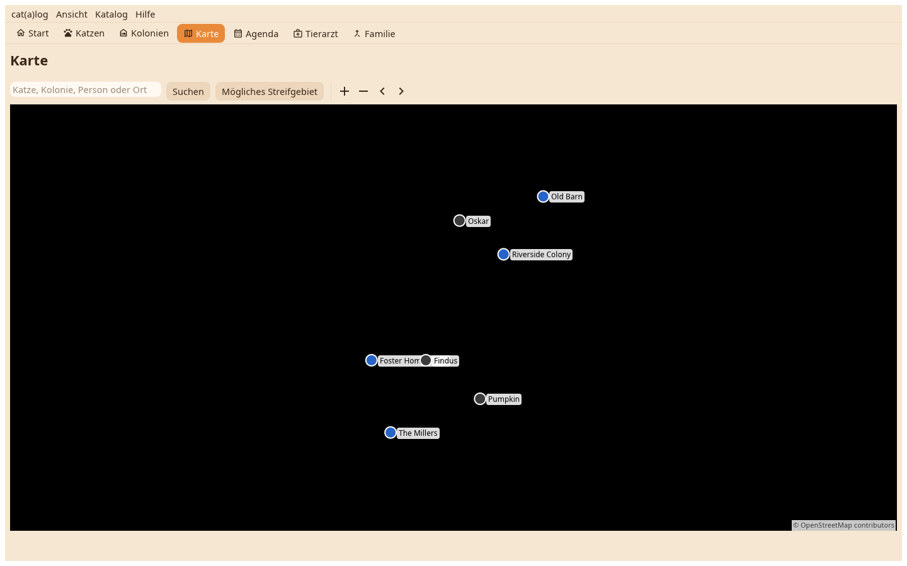

Jede Katze und jeder Ort mit Position, wie auf dem Telefon, mit den Bedienelementen eines Schreibtischs: Knöpfe für näher und weiter, Pin für Pin, ein mit Umschalt gezogener Kasten zum Hineinzoomen.

Ein Zuhause an seiner Position, eine Katze an ihrer letzten Sichtung, jeder noch hängende Aushang als eigener Pin. Was auf einem Fleck steht, teilt sich einen Pin mit Zähler; ein Klick listet es unter der Karte, das Kartensymbol an einer Zeile zeichnet die Spur. Ein Klick auf einen einzelnen Pin zeichnet seine Spur, ein zweiter öffnet das Ding.
Die Suche springt zu einer Katze oder einem Zuhause nach Name, zu einer verantwortlichen Person, sonst zu einem Ort, den der Geocoder kennt, und sagt, was sie fand. Mögliches Streunergebiet zeichnet die 500-m-Kreise einer gewählten vermissten Katze.
Auf dem Boden: hier eintragen, gesehen oder Aushang, für eine gewählte Katze. Auf dem Pin eines Aushangs: Aushang abgenommen.